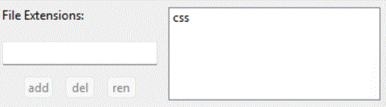

listedit controls
Listedit controls are used in a number of places in ssc to define and modify items in a list.

This example is from the css panel, but all listedit controls work in the same way.
-
To add a new unique entry, type it in the one line edit field, and click ADD;
-
To delete an existing entry, select it from the list of values, and click DEL;
-
To rename an existing entry, select the old name from the list of values, type the new name in the one line edit field, and click REN.